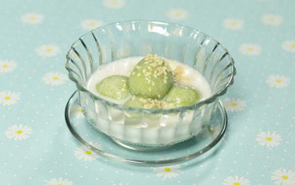

เกสรชมพู
ขนมชนิดนี้มองกันให้ดี ว่านั่นคือมะพร้าวขูดไม่ใช่ข้าวเหนียว เพราะมีหลายคนเข้าใจผิดเป็น "ข้าวเหนียวแก้ว" ซึ่งที่จริงแล้วคือมะพร้าวขูดกวนกับวุ้น รสชาตินี้ขอบอกเลยค่ะว่ารสมะพร้าว "มันติดปาก หอมติดใจและหวานติดปลายลิ้น" Read more...
ไข่ปลา

เอกลักษณ์อยู่ที่รูปทรงและสีสัน ถูกประดิษฐ์ออกมาคล้ายคลึงกับไข่ปลาสีเหลืองและด้วยรสชาติความเหนียวนุ่ม หวาน มัน หอมเนื้อตาล ซึ่งต้องกินคู่กับมะพร้าวขูดเค็มๆมันๆเข้ากันกำลังดี ที่สำคัญใช้แป้งเดียวกับที่ทำขนมตาลจึงทำง่ายไม่ยุ่งยาก Read more...
โคกะทิ

ขนมโคกะทิ เป็นขนมที่ได้รับวิวัฒนาการดัดแปลงจาก ขนมโค โดยขนมโคเดี่ยวๆ จะกินแบบแห้ง แต่พอเติมน้ำกะทิลงไป ก็จะกลายเป็นขนมโคกะทิ และยังมีลักษณะคล้ายขนมหัวล้าน ซึ่งขนมหัวล้านกับขนมโคนั้น มีความแตกต่างกันที่ไส้ข้างใน หากเป็นขนมโคหรือโคกะทิจะเป็นไส้มะพร้าวผัดน้ำตาลพอหอมๆกลิ่นไหม้ๆ แต่ถ้าเป็นขนมหัวล้านจะเป็นไส้ถั่วเขียวรสชาติหวานๆมันๆ Read more...
ดอกลำเจียก

ขนมดอกลำเจียก หรือ ขนมเกสรลำเจียก ตัวขนมมีลักษณะคล้ายดอกลำเจียกที่ออกดอกอย่างเต็มที่ ตัวกลีบเกสรแตกออก ส่งกลิ่นหอมหวนชวนถวิลหา ตัวไส้หวานมันมะพร้าว ถูกห่อด้วยแป้งข้าวเจ้าน้ำใบเตยอบด้วยควันเทียน นุ่มๆหอมๆ เคี้ยวเพลินๆ Read more...
เทียนสลัดงา

ขนมเทียนสลัดงา หรือ ขนมงาสลัด เป็นขนมที่ให้ความหมายเป็นสิริมงคลเพราะเทียนนั้นแทนการส่องแสง สว่างไสวรุ่งโรจน์ ส่วนตัวข้าวเหนียวแก้วก็จะให้ความเหนียวแน่นเป็นปึกแผ่นและตัวงานั้นหมายถึงความเจริญงอกงามนั่นเอง Read more...
บุหลันดั้นเมฆ

หนึ่งในบรรดาขนมไทยชาววังที่มีชื่อ หน้าตาและสีสันที่สวยงาม เกิดจากจินตนาการ ออกแบบสีและรูปทรงจากการฟังบทเพลงพระราชนิพนธ์ "บุหลันลอยเลื่อน" โดยแทนสีเหลืองที่อยู่ตรงกลางเป็นบุหลันหรือดวงจันทร์(ทำจากไข่แดง)และแทนสีฟ้าครามที่อยู่ล้อมรอบเป็นท้องฟ้า(จากน้ำอัญชัน) Read more...
พันตอง
เป็นขนมที่ต้องทานคู่กันทั้ง 2 ห่อ คือ ห่อของไส้ มีส่วนผสมของมะพร้าวกับน้ำตาลปี๊ปปั้นเป็นก้อนกลมๆและอีกห่อเป็นส่วนของแป้ง ประกอบด้วยหัวกะทิ แป้งข้าวเจ้า เกลือ ความเค็มของแป้งกะทิและไส้มะพร้าวออกหวานนิดตัดกันอร่อยกลมกล่อมอย่างลงตัว Read more...
โพรงแสม
ขนมโพรงแสม มีลักษณะคล้ายทองม้วนแต่ต่างตรงที่เคลือบน้ำตาล หรือน้ำแตงโม ราดพันรอบๆ โดยที่ความกรอบ หอม หวาน และมัน เข้ากันอย่างลงตัว ส่วนใหญ่นิยมใช้เป็นขนมมงคลในพิธีสมรส ซึ่งแทนความหมาย ถึงความแข็งแรงมั่นคงของเสาบ้าน และให้บ่าวสาวมีความรักที่ยืนยาวหวานหอมRead more...
สามเกลอ
เป็นขนมสำหรับเสี่ยงทายในวันแต่งงาน โดยจะดูได้จากการนำลงไปทอด 3 ลูกเรียงกันถ้าทอดแล้วยังติดกันอยู่ 3 ลูก ถือว่าบ่าวสาวจะรักใคร่กลมเกลียวกัน แต่ถ้าทอดแล้วติดกัน 2 ลูก อาจจะมีลูกยากหรือไม่มีเลย และถ้าไม่ติดกันเลยซักลูก แปลว่าชีวิตสมรสจะไม่มีความสุข แต่ถ้าทอดแล้วพองฟูจะถือว่าเป็นคู่ที่เหมาะสมราวกิ่งทองกับใบหยกRead more...
หม้อตาล

หรือที่เรียกว่าขนม "หม้อเงิน หม้อทอง" เป็นขนมที่นิยมใช้ในพิธีมงคลสมรส เพราะชื่อและรูปทรง ที่มีความหมายถึง หม้อที่เต็มไปด้วยเงินทอง เต็มไปด้วยสีสันของน้ำตาล ความหวาน ช่วยส่งเสริมให้บ่าวสาวรักกันยาวนาน ร่ำรวยRead more...